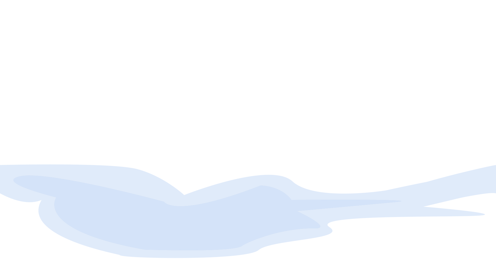

aspiring
computer
scientist


Matthew
Frieri

aspiring
computer
scientist
Hello! I'm Matthew Frieri, a second-year student in Computer and Data Science at the University of Toronto. I'm passionate about discovering how technology can solve real-world problems and positively impact different industries and communities.


CookClever is an innovative web app designed to help people learn how to cook. At each step, users are prompted to take a picture of their progress which is then analyzed using AI to evaluate their cooking and provide helpful feedback. CookClever offers a wide range of recipes with detailed, step-by-step instructions to guide users through the cooking process.
See More...A real-time interactive visualization of how Bézier curves are modelled. Users can interact with control points to see how the curve dynamically updates, providing an intuitive understanding of how Bézier curves are constructed and manipulated. This tool serves as both an educational resource and a practical demonstration of mathematical concepts in action.
See More...A visualization to explore bubble sort, insertion sort, and selection sort in real-time. Users can manipulate data points and observe how these algorithms dynamically sort them step-by-step. Creating this tool was useful for learning algorithmic efficiency and provided practical insights into sorting techniques.
See More...A space themed implementation of the breadth first search pathfinding algorithm. This project was made for a school hackathon where the theme was "lost in space"! The visualization is a fun and interactive way for students to learn about pathfinding algorithms.
See More...